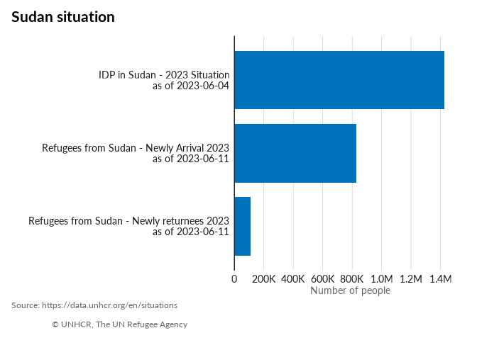

The goal of unhcrdataportal is to retrieve data from UNHCR Data Portal within an R session.
Retrieving this data allows to perform quick quality assurance control.
Installation
You can install the development version of unhcrdataportal from GitHub with:
# install.packages("devtools")
devtools::install_github("Edouard-Legoupil/unhcrdataportal")Note that if you are on windows, you will need to have Rtools installed on your machine
Example
This is a basic example
library(unhcrdataportal)
## basic example code
page = "Sudan situation"
datasitpop <- odp(page = page,
dataset = "population") |>
## extract the data
purrr::map( "data") |>
## Bind together in a data frame
purrr::list_rbind()
library(ggplot2)
datasitpop |>
ggplot() +
geom_col(aes(x = as.integer(individuals),
y = reorder( glue::glue("{population_group_name} \n as of {date}"),
as.integer(individuals) )),
fill = unhcrthemes::unhcr_pal(n = 1, "pal_blue"),
width = 0.8) +
labs(title = paste0(page),
x = "Number of people",
y = "",
caption = "Source: https://data.unhcr.org/en/situations \n
© UNHCR, The UN Refugee Agency") +
scale_x_continuous(expand = expansion(c(0, 0.1)),
breaks = scales::pretty_breaks(n = 7),
labels = scales::label_number(scale_cut = scales::cut_short_scale())) +
unhcrthemes::theme_unhcr(
font_size = 12,
grid = "X",
axis = "y")